OITA MOBILITY ATLAS 2.0
その用事、
行って帰れる？
大分の暮らしの移動を、公開データで確かめる。
目的・使う人・わかることを、実画面で。
ビジュアルカタログ / 2026年9月24日更新
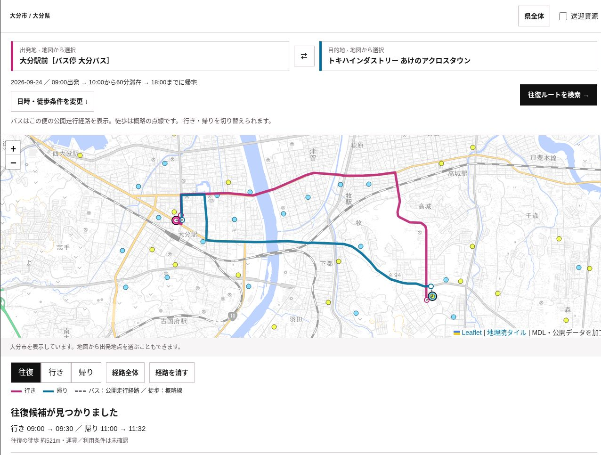
02 / 18 START
移動の困りごとを、
話し合える形に。
病院や買い物先への往復を調べ、地域の課題を見つけ、改善案を比べる。暮らしの用事から交通を考える公開デモです。
こんな方に 住民・支援者／自治体／交通事業者／施設・研究機関
住民・家族・支援者
PEOPLEで、往復候補・帰宅時刻・徒歩の目安を確認。
自治体の交通・福祉担当
ATLASで、同じ目的地・時間の条件を地図と人口で比較。
交通事業者・企画担当
LABで、時刻変更や移動手段の費用と改善の大きさを比較。
病院・店舗・学校・研究機関
送迎の公表事例、利用条件、分析の出典を確認。
地図と根拠を共有して、次に確かめることを決められます。
MDLによる公開デモです。大分県の公式サービスではありません。
この機能を開く →03 / 18 START
知りたいことから、
３つの入口へ。
一人の用事を調べる。地域で比べる。改善案を試す。目的に合う画面から始められます。
こんな方に 初めて使う方・地域の話し合いを進める方
その用事、行って帰れる？
出発地・目的地・日時を指定。
行きと帰りの候補を確かめる。
この地域の移動課題は？
地域・目的地・時間の条件をそろえ、
区域ごとの往復候補を比べる。
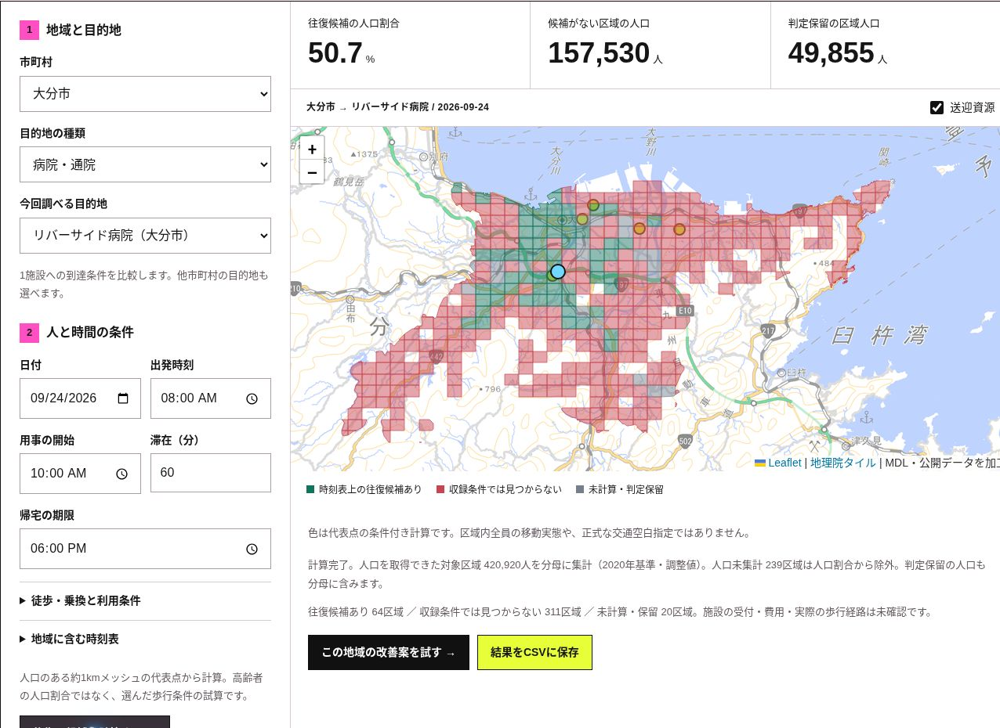
この画面を開く →03 / LABどう変えれば改善する？
ATLASの条件を引き継ぎ、
改善案の費用と効果を比べる。
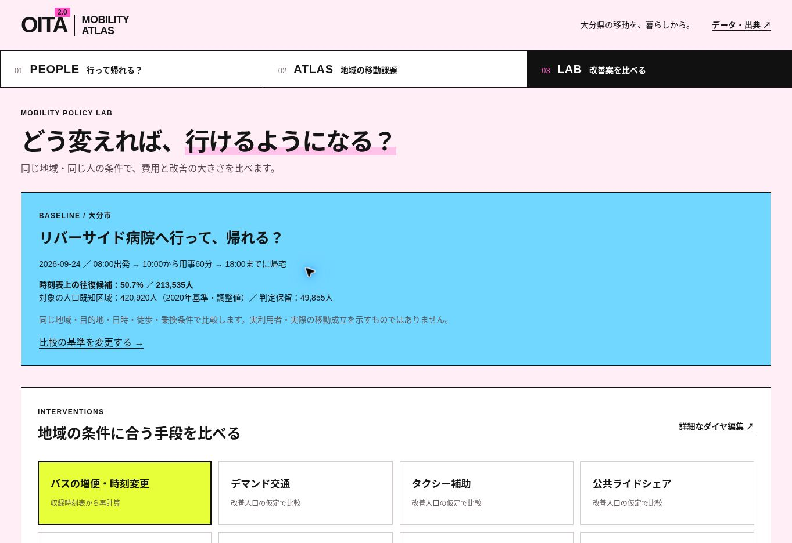
この画面を開く →ATLASからLABへ、比較の基準を引き継げます。
PEOPLEは一つの出発地の検索、ATLASは地域の代表点の比較です。
この機能を開く →04 / 18 PEOPLE
この人の、この用事。
場所と時間を決める。
わかること：何を入力すれば、自分の予定に合う往復を調べられるか。
こんな方に 住民・家族・支援者・窓口担当
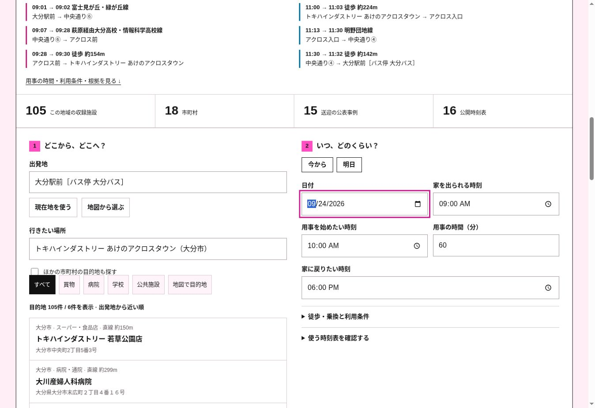
- 1市町村・出発地を選ぶ
- 2目的地を探す／地図で選ぶ
- 3用事の時間・帰宅期限を入れる
徒歩の速さ・乗換・予約の条件も設定できます。収録施設は一部です。候補にない場所は地図で指定できます。
この機能を開く →05 / 18 PEOPLE
行きだけでなく、
帰りまで見える。
わかること：公開時刻表での往復候補、乗る便、帰宅時刻、徒歩の目安。
こんな方に 住民・支援者・自治体・交通事業者
- 1往復ルートを検索
- 2行き・帰りの便を確認
- 3根拠と未確認の条件を読む
バスの線は公開走行経路、徒歩は概略線です。運賃・運休・遅延・鉄道・施設送迎は未統合。実際の運行と受付は別途確認します。
この機能を開く →06 / 18 PEOPLE
この場所から、
どんな用事に行ける？
わかること：30分・60分以内に行ける候補がある、収録施設の数と種類。
こんな方に 住民・支援者・施設運営者・地域を調べる方
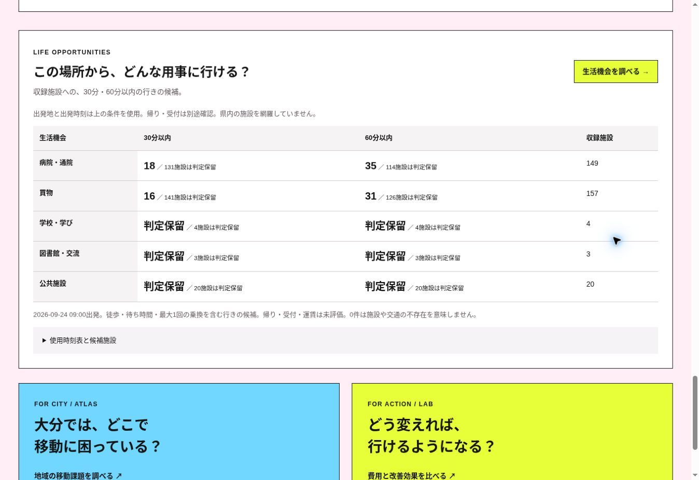
- 1出発地と時刻を設定
- 2生活機会を調べる
- 3施設の種類と判定保留を見る
ここでは「行き」を調べます。帰り・受付・運賃は別途確認。判定保留や0件は、施設・交通が存在しないことを意味しません。
この機能を開く →07 / 18 ATLAS
同じ用事で、
地域の違いを見る。
わかること：一つの目的地への往復候補が、どの区域にあるか。人口の目安も比較できます。
こんな方に 自治体の交通・福祉・まちづくり担当、交通事業者
- 1地域・目的地を選ぶ
- 2人と時間の条件を設定
- 3地図と人口を見比べる
人口のある約1kmメッシュの代表点で計算します。2020年基準の人口調整値を用い、人口不明の区域は集計から除外しています。
この機能を開く →08 / 18 ATLAS
色の違いを、
次の確認につなげる。
わかること：時刻表上の往復候補がある区域、見つからない区域、まだ判定できない区域。
こんな方に 地域の課題を説明する方・分析結果を読む方
候補あり
時刻表上の往復候補を確認。
受付・利用条件は別途確認。
見つからない
収録条件では候補なし。
未収録の手段も確認する。
未計算・判定保留
計算や根拠が足りない。
必要なデータを確かめる。
区域内全員の移動実態、実利用者数、正式な交通空白指定を示すものではありません。日時や徒歩条件を変えると結果も変わります。
この機能を開く →09 / 18 ATLAS
地域にある送迎を、
連携の手がかりに。
わかること：病院・学校・店舗などの送迎の公表事例と、対象者・予約条件・出典。
こんな方に 自治体・病院・学校・店舗・交通事業者
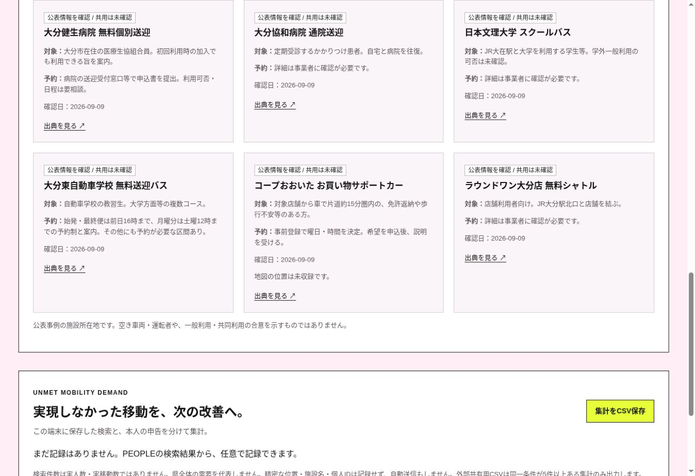
- 1地域の移動資源を見る
- 2対象者・予約条件を読む
- 3事業者と連携の可否を確認
公表事例の紹介です。空き車両・運転者や、一般利用・共同利用の合意を示すものではありません。送迎は往復検索に未統合です。
この機能を開く →10 / 18 LAB
比較の条件をそろえて、
改善案を選ぶ。
わかること：どの移動を改善するか、何を基準に、どの手段を比べるか。
こんな方に 自治体の政策・交通担当、交通事業者、施設運営者
- 1ATLASで基準を計算
- 2この地域の改善案を試す
- 3比較したい手段を選ぶ
バスの増便・時刻変更は収録時刻表から再計算。それ以外の手段は、改善後の人口を利用者が仮定して比較します。
この機能を開く →11 / 18 LAB
いくらで、どのくらい
改善するかを比べる。
わかること：基準からの改善候補人口、年間追加費用、改善候補人口1人あたりの年間費用。
こんな方に 自治体の政策・財政担当、交通事業者・研究機関
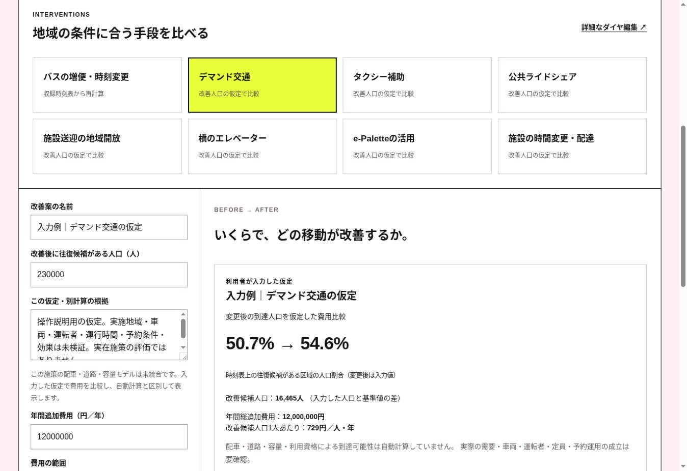
- 1変更・仮定と根拠を入力
- 2年間追加費用を入力
- 3比較結果を確認／CSV保存
写真は実在施策の効果・見積ではありません。改善候補人口は実利用者数とは異なり、円／人・年は移動1件あたりの費用ではありません。
この機能を開く →12 / 18 LAB
試算から、
実際に使える移動へ。
わかること：現場で確かめる条件と、小さな実証で測るべき成果。
こんな方に 自治体・交通事業者・施設・地域の実証担当
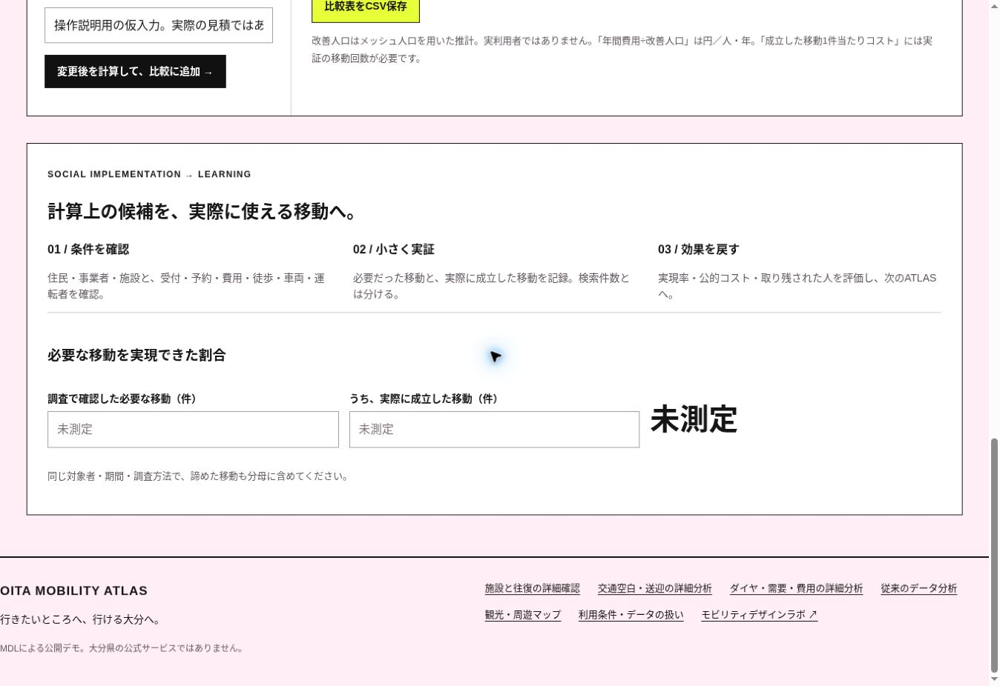
- 1住民・事業者と条件確認
- 2必要な移動と成立数を測る
- 3結果を次の改善に戻す
同じ対象者・期間・調査方法で測り、諦めた移動も分母に含めます。検索件数や計算上の候補を、実際の成果と混同しません。
この機能を開く →13 / 18 DETAIL
もっと詳しく、
ダイヤ・需要・費用へ。
わかること：時刻・本数の変更、取り込んだ乗降・OD実績、将来の利用試算、費用便益の条件。
こんな方に 交通事業者・自治体の分析担当・研究機関
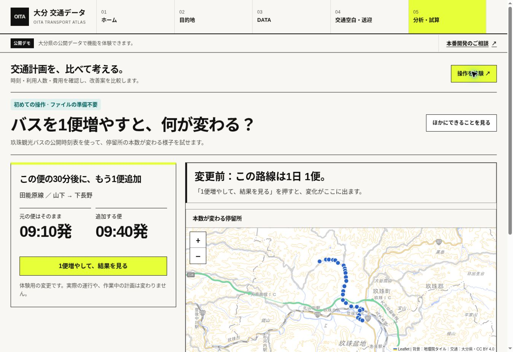
- 1時刻表・集計実績を準備
- 2条件を変えて試算
- 3根拠付きの結果を保存
乗降・ODは集計データを取り込む機能です。需要試算は施策効果の保証ではなく、費用便益は入力条件に基づく部分評価です。
この機能を開く →14 / 18 DATA
その分析は、
何をもとにしている？
わかること：収録データの種類・提供元・利用状況。原典や利用条件もたどれます。
こんな方に 自治体・研究機関・分析結果を説明する方
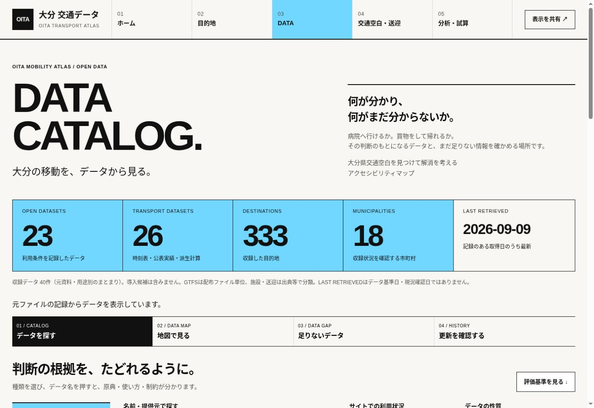
- 1データ・出典を開く
- 2カテゴリや名前で探す
- 3データ名から原典を確認
利用中・一部利用・導入候補を区別しています。地図で人口・施設・停留所を重ねる機能もあります。公開情報すべてがオープンデータとは限りません。
この機能を開く →15 / 18 DATA
交通の空白と、
データの空白を分ける。
わかること：市町村ごとに、このサイトに収録されている情報と、足りない情報。
こんな方に 自治体・地域のデータ収集担当・研究機関
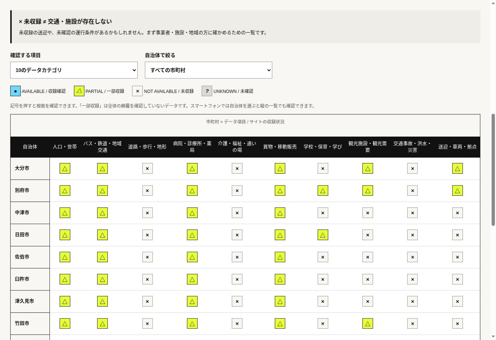
- 1足りないデータを開く
- 2項目と自治体を見る
- 3記号を押して根拠を読む
「未収録」は、このサイトにデータがないという意味です。交通・施設の不存在を示すものではありません。現地や提供元で確認します。
この機能を開く →16 / 18 DATA
出典も、時点も、
限界も確かめる。
わかること：データの提供元・基準日・取得日・有効期間・利用条件と、分析で未反映の情報。
こんな方に 資料作成者・研究機関・意思決定に関わる方
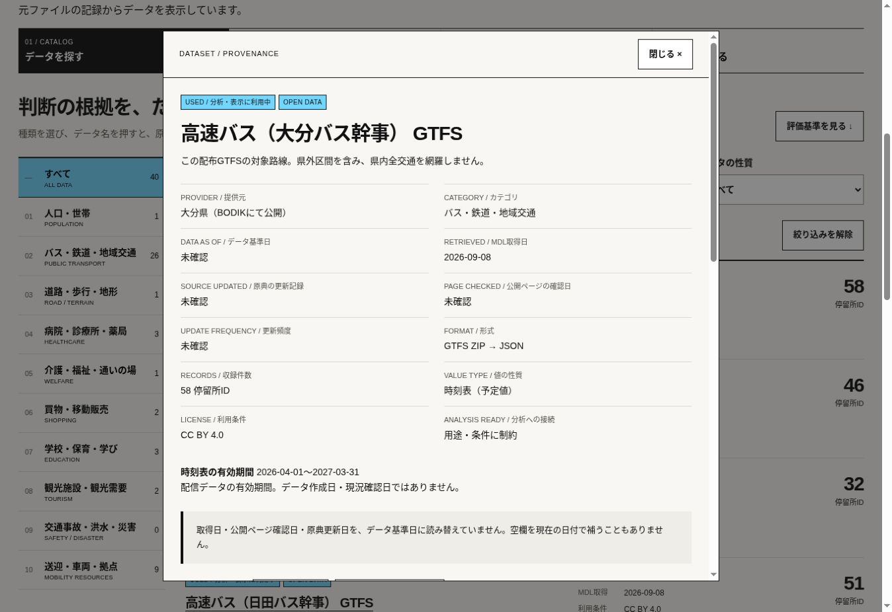
- 1データの詳細を開く
- 2時点と制約を読む
- 3原典・現況を確かめる
取得日が新しくても現況を保証しません。運賃・遅延・鉄道・送迎、歩道・坂・施設の受付など、未評価の条件は別途確認します。
この機能を開く →17 / 18 ACTION
まずは、
ひとつの用事から。
話し合いたい移動を一つ決めれば、使い始められます。結果と一緒に、設定条件・出典・未確認事項を残します。
こんな方に 地域で使ってみたい方・打ち合わせの進行役
- 01
用事を決める
誰が、どこから、どこへ。何時に用事を始め、何時までに帰りたいか。
PEOPLEで、往復候補と未確認の条件を見る。 - 02
地域で確かめる
同じ目的地と時間で、どの区域から行きにくいか。使えそうな送迎はあるか。
ATLASで地図・人口・移動資源を確認。結果をCSVで保存。 - 03
次の一手を決める
何を変えるか。費用をどう見積もるか。誰と、何を現地で確かめるか。
LABで比較し、小さな実証の条件と測り方を決める。
「検索して終わり」から、地域で確かめて改善する一歩へ。
PEOPLEの任意記録はこの端末に保存され、自動送信されません。検索結果と本人申告を分け、ATLASで集計を確認できます。
この機能を開く →18 / 18 ACTION / START HERE
行きたいところへ、
行ける地域を。
調べる道具から、地域で使える仕組みへ。
まずは、一つの用事を選んで試してください。
本番開発・データ連携・地域での活用のご相談
info@mobilitydlab.com ↗